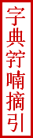

|

Chữ Nôm là một loại chữ viết, mượn chữ Hán làm căn bản để ghi chép tiếng nói của người Việt Nam. Chữ Nôm đã được sáng tạo, và có mặt trong đời sống văn hoá của dân tộc hơn 1000 năm nay. Ta không biết chính xác chữ Nôm xuất hiện từ lúc nào, nhưng đã phát triển mạnh mẽ bắt đầu từ thời đại nhà Trần, và đã được sử dụng khi thì song song với chữ Hán khi thì song song với chữ Hán và chữ Quốc Ngữ cho tới gần cuối đời nhà Nguyễn, rồi tàn lụi kể từ khi chữ Quốc Ngữ được quảng đại quần chúng Việt Nam chấp nhận từ thập niên 1920. Chữ Nôm là kết quả sáng tạo rất có ý nghĩa của tổ tiên chúng ta và đã đóng một vai trò quan trọng trong công việc truyền đạt và làm lớn mạnh nền văn hóa của dân tộc.
Từ gần một trăm năm qua, chữ Nôm đã bị ngưng trệ. Tuyệt đại đa số người Việt Nam, ngoại trừ một số rất nhỏ các nhà chuyên môn về chữ Nôm, đã không còn đọc trực tiếp được những văn bản về văn chương, lịch sử, phong tục, tập quán ... viết bằng chữ Nôm mà phải đọc qua trung gian các bản phiên âm viết bằng chữ Quốc Ngữ. Những văn bản chữ Nôm này ít được phổ biến nên sự hiểu biết về những gì chuyên chở trong các văn bản viết bằng chữ Nôm ngày càng trở nên mai một. Từ chữ Nôm qua chữ Quốc Ngữ đã gây nên sự ngăn cách trong việc truyền đạt liên tục văn hoá Việt Nam. Do đó, việc tìm hiểu và phiên âm từ Nôm ra Quốc Ngữ là một việc làm quan trọng và cấp bách. Qua đầu thế kỷ 21, với kỹ thuật điện tử, chữ Nôm và chữ Quốc Ngữ đã hiển thị được trên máy vi tính. Ngày nay đã có hơn 10,000 chữ Nôm đã được tổ chức Unicode Consortium cho mã số, do vậy việc phiên âm tác phẩm và bảo tồn nền văn hóa chữ Nôm sẽ có cơ hội phát triển trong tương lai. Hàng ngàn tác phẩm chữ Nôm đủ các loại Truyện, Tuồng, Ngâm Khúc, Diễn Ca, Diễn Truyện, Thần Tích, Ngọc Phả, Thần Sắc, Ðiều Ước, Tục Lệ, Ðịa Bạ, Gia Phả ... đang nằm rải rác trong các thư viện trên thế giới, cũng như đang được cất giữ trong dân gian, đang chờ đợi người có tâm huyết làm công việc phát huy và bảo tồn nền văn học chữ Nôm của chúng ta. Đây chính là động lực thúc đẩy chúng tôi thực hiện bộ tự điển này.
Sự phát triển của kỹ thuật điện toán cùng khả năng truyền thông trên Internet đã cho phép kết hợp một Ban Biên Tập gồm nhiều người cư ngụ tại nhiều nơi trên thế giới, quy tụ các chuyên gia ngôn ngữ Hán-Việt-Nôm, các nhà nghiên cứu ngữ âm học lịch sử, các chuyên viên kỹ thuật điện toán và Internet, các chuyên gia chế tạo kiểu chữ và cả những người mới tìm học chữ Nôm. Công việc thực hiện tự điển được tiến hành như sau:
- Thâu thập các tài liệu, văn bản chữ Nôm từ các thư viện trên thế giới hoặc từ những tư liệu của các nhà nghiên cứu.
- Chọn lọc một số văn bản nòng cốt để lập thành một "Thư mục" dùng làm cơ sở lột soát từng chữ Nôm một. Ðưa vào tự điển với tinh thần tôn trọng tối đa nguyên tác các thí dụ được trích dẫn và ghi chú xuất xứ chính xác.
- Chế tạo kiểu chữ Nôm (fonts) đúng tiêu chuẩn mã quốc tế Unicode Standard và Microsoft Specifications for True Type Fonts -- từng chữ, từng chữ theo kết quả công trình lột soát chữ từ các văn liệu sưu tầm được.
- Gõ nhập chữ vào tự điển dạng điện tử.
Tự điển này đặt cơ sở trên những trích dẫn từ các văn bản Nôm nên mang tên là "Tự Ðiển Chữ Nôm Trích Dẫn", có những đặc điểm sau đây: dễ tra tìm chữ, giải thích cấu tạo của chữ và trích dẫn văn liệu chính xác.
Ngoài các cách tra chữ thông dụng như trong các tự điển chữ Hán: theo bộ thủ, theo số nét, theo âm, theo số mã Unicode, Tự Điển Chữ Nôm Trích Dẫn trên mạng Internet hay dưới bất cứ dạng điện tử nào (CD-ROM, Flash memory, Hard drive, v.v.) còn cho phép tìm kiếm (searching) chữ Nôm trong Tự điển "theo mặt chữ viết" căn cứ trên các thành phần cấu tạo nên chữ Nôm đó. Người sử dụng tự điển, khi gặp một chữ Nôm không biết âm đọc là gì, không biết thuộc bộ thủ nào, không rõ số mã Unicode, có thể gõ một hay nhiều thành phần của chữ Nôm và sẽ tìm ra những chữ Nôm có những thành phần đó trong tự điển với các âm đọc kèm theo. (Xem "Cách sử dụng").
Để lý giải tại sao chữ Nôm được viết như thế này như thế kia, điều này cũng góp phần không nhỏ trong việc giúp người sử dụng nhớ mặt chữ, chúng tôi nêu ra một hay nhiều giải thích về sự cấu tạo của mỗi chữ Nôm trong tự điển. Sự cấu tạo chữ Nôm cũng tương tự như phép lục thư (tượng hình, hội ý, hài thanh, v.v.) của chữ Hán. Thông thường, mỗi chữ Nôm đều gồm có một phần biểu âm hay một phần biểu nghĩa hay là tập hợp của một phần biểu âm và một phần biểu nghĩa. Các nhà nghiên cứu chữ Nôm đã đưa ra nhiều lối phân loại chữ Nôm khá hoàn chỉnh, chia chữ Nôm ra thành nhiều loại, rất phức tạp đối với đa số người học chữ Nôm. Ban Biên Tập, dựa trên những công trình nghiên cứu đó, chủ trương trình bày cấu tạo của mỗi chữ Nôm một cách giản dị hơn, chỉ phân chia chữ Nôm ra hai loại chính gồm phần biểu âm/ý đơn thuần và tập hợp của phần biểu âm và phần biểu nghĩa.
Mỗi chữ Nôm trong tự điển, với một hay nhiều âm đọc, với một hay nhiều nghĩa, đều được dẫn chứng bằng các thí dụ cụ thể trích dẫn từ các tài liệu, văn bản Nôm khác nhau và được ghi chú xuất xứ chính xác, nếu có, gồm tên tác phẩm, thời điểm xuất bản của tác phẩm, tên nhà xuất bản, trang/tờ số [tr.14a], câu số [c. 7-8], v.v. Dù số lượng văn bản Nôm sưu tập được có giới hạn, chúng tôi cũng cố gắng tối đa tìm kiếm và lựa chọn những văn bản tiêu biểu cho nhiều thể loại, thuộc nhiều thời kỳ trong lịch sử. Ðôi khi chúng tôi cũng lựa chọn những dị bản tiêu biểu của một tác phẩm cũng như đưa vào tự điển những văn bản Nôm có âm hưởng địa phương khác nhau của đất nước. (Xem "Thư Mục").
Những mục từ (entries/items) trong tự điển với các giải thích cấu tạo và những thí dụ dẫn chứng sẽ tạo thành một "kho dữ liệu " (database) giúp các nhà nghiên cứu có thêm phương tiện tra cứu tìm ngữ cảnh của chữ Nôm, hoặc làm thống kê tổng hợp các dạng chữ Nôm có cùng một âm đọc, hoặc so sánh âm nghĩa, phân tích, suy luận hầu xác nhận hoặc đưa ra những kiến giải về cách cấu tạo hoặc sử dụng chữ Nôm qua các thời kỳ lịch sử, v.v.
Với tấm lòng tha thiết với văn hóa và ngôn ngữ nước nhà, trong tinh thần vô vị lợi, chúng tôi hân hạnh công bố kết quả sơ khởi dự án Tự Điển Chữ Nôm Trích Dẫn. Hy vọng cuốn tự điển chữ Nôm trên mạng Internet này sẽ là một phương tiện giúp ích những người muốn học hỏi hoặc nghiên cứu chữ Nôm. Đồng thời, chúng tôi cũng mong tạo cơ hội trao đổi, thảo luận, phê bình và học hỏi với mọi người quan tâm về vấn đề này.
Kính cáo,
Ban Biên Tập Tự Điển Chữ Nôm Trích Dẫn.
|